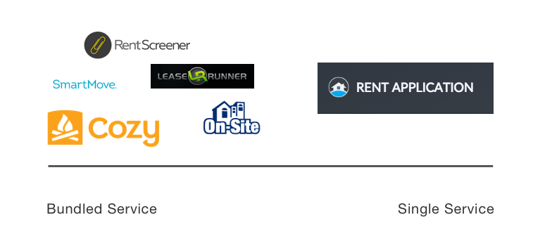

NWTN
NWTN aims to reduce the occurrence of multiple head injuries in athletes by way of sensors paired with their coaches phones. My team and I were asked to develop a mid-fidelity prototype of the app interface. We conducted multiple user interviews with coaches and athletic trainers and built a set of 55 screens in our final prototype based around our findings from extensive research and testing. We ensured our design solutions were desired by users by doing many rounds of usability testing.
AREA OF FOCUS
UX
TEAM MEMBERS
Kelsey Fiegle
Natalie Leroy
TIMELINE
Three weeks

THE CHALLENGE
NWTN is an impact detection sensor intended for use by non-professional athletes. A NWTN sensor is clipped to an athlete’s helmet or headband. When impact is detected, a notification is sent to the coach or trainer who has paired the sensor with their phone via bluetooth. The data surrounding the impact would be recorded for the coach to review along with the option to conduct a S.C.A.T. (sport concussion assessment tool) assessment using the pocket S.C.A.T. tool included in the app. NWTN has been through two rounds of UX research and design with other teams in the past so we started by gaining an understanding of the current state of NWTN.
(OLD WIREFRAMES) We were provided with a set of deliverables that were produced by the previous UX teams. Some of what was included was a set of personas, interview transcripts and 28 annotated wireframe screens. The majority of the work had been discarded because of a business decision to focus on soccer players instead of on football players. The remainder of the UX and UI work was shared with us in 4 UI screens. These screens contained components that shaped the mid-fi UX wireframes and user flows we completed in Sprint 2. After learning what the previous teams had focused on and created, we took note of what pieces NWTN adopted. At that point, the NWTN app consisted of a team roster, individual impact overview and a visual representation of impact by graph or 3D video recreation.
In our initial kickoff, Eric requested we focus on the onboarding and dashboard in our scope, as where most users exist in the site. He was also open to any other areas that we suggested needed work on, so if time in our design sprint allowed, we planned to test and redesign the landing page because of the analytics on initial bounce rate we were given.
THE APPROACH
Learning about the rental application screening market
We compared six services’ interfaces and features that Eric considered competitors to Rent Application. We found a major takeaway to be true: Almost none of the sites we looked at had a modern, user-friendly experience, except for Cozy. The rental application landscape is crammed with clunky, out of date websites that are confusing and frustrating. We see this as a great opportunity for Rent Application to stand out amongst the current market.
After conducting the competitive analysis, we began to assess Rent Application. Why is there such a massive drop-off? Here’s what we initially hypothesized before conducting further research:
We assumed that the dashboard is confusing, price options are unclear and the onboarding process is too lengthy.
We sought to validate these hypotheses by moving forward and conducting our first round of user interviews and testing using Rent Application’s current website.